Current and former members of the lab
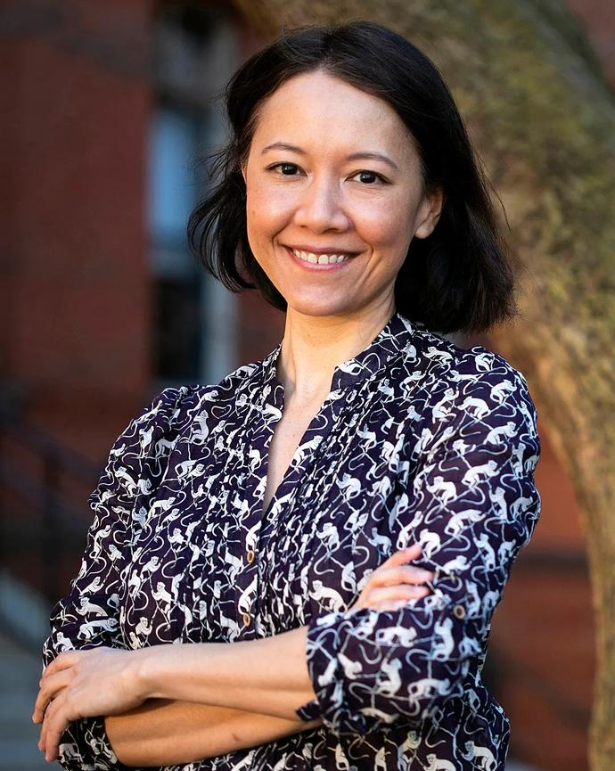
I seek to understand how the human body acquires and utilizes energy, and how past changes in energy budget have shaped human evolution. Within the past decade, it has become clear that energy metabolism depends on complex interactions between diet, health, genetics, and the structure and function of the microbial communities living inside the human body. My work considers the human body as an ecosystem, integrating perspectives and experimental techniques from evolutionary biology, nutrition, physiology, microbiology, and metagenomics to pursue a richer understanding of energy exchange. Currently, my group is employing this ecosystem approach to probe the digestive capacities that are unique to humans, host-microbial cooperation and conflict over energy resources, and the caloric potential of non-caloric dietary components.
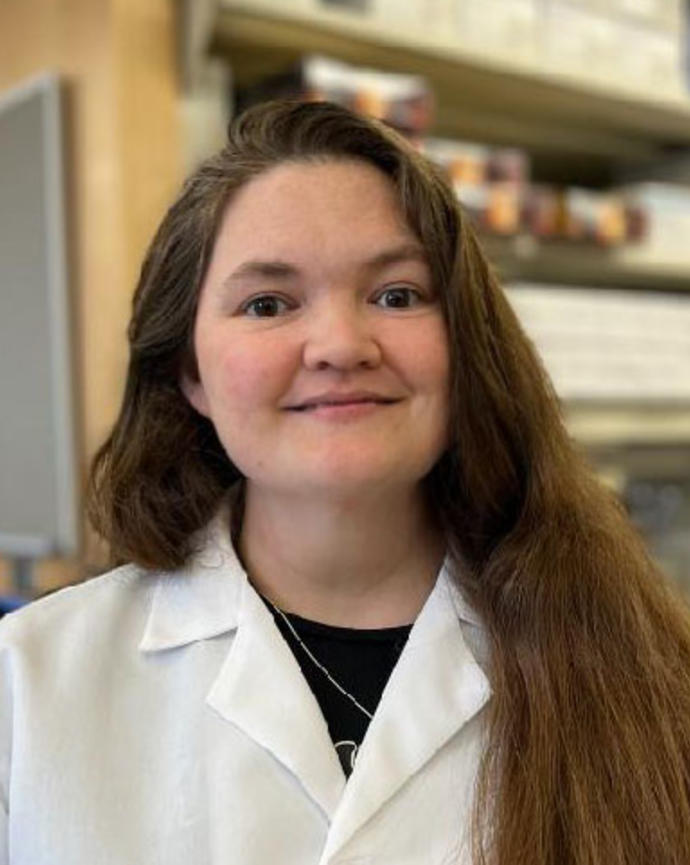
I am broadly interested in how nutrition can affect behavior via the microbiota-gut-brain axis. As breast milk has historically been the first food encountered by humans and their gut microbes, I am currently studying the potential co-evolution between mother’s milk and microbes of the infant gut. Mother’s milk is a key source of parent-offspring conflict and since mothers both ‘seed and feed’ the infant gut microbiota, milk and microbes may be interacting to affect infant behavior and energy harvest in ways beneficial to the mother. Additionally, infant behavior that increases a mother’s fitness may vary depending on the mother’s ecological context. In the Carmody lab, I study microbes, milk, and metabolites using in vivo mouse models and in vitro cultures.
Yi Jia is a visiting Ph.D. student from the University of Tokyo. Her research explores the intersection of nutritional neuroscience, the gut microbiome, and eating behavior.
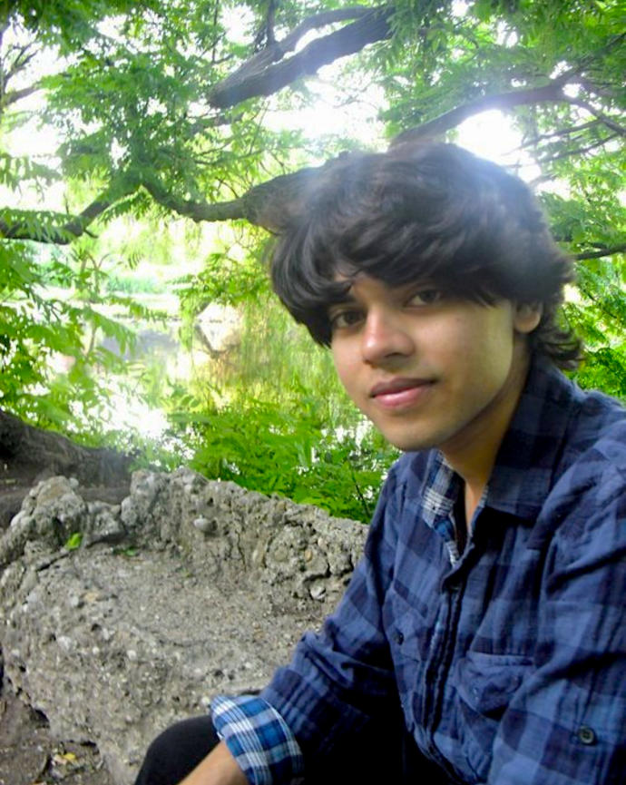
I completed master’s degrees in psychology at the University of Oxford (Brasenose College) and neuroscience at the University of Cambridge (Trinity College). I also worked for several years as a research assistant in the Department of Experimental Psychology at Oxford. I am broadly interested in human health, development, and evolution. At Harvard, I will study host-microbe interactions using an evolutionary framework. In addition to the microbiome and host physiology, I am interested in neuroscience, immunology, endocrinology, and social and cognitive psychology, and look forward to combining these in an evolutionary framework. Outside the lab, I am an avid reader of fiction.
Broadly, I’m interested in the co-evolution of humans with our resident gut microbiota and how plasticity in the gut microbiome contributes to variations in host phenotype. My current work focuses on how gut microbes differ in their contributions to host energy balance, where I am interested in comparing the mechanisms by which different obesogenic microbial communities function by altering different components of energy balance, such as metabolic rate, energy allocation and energy harvest.
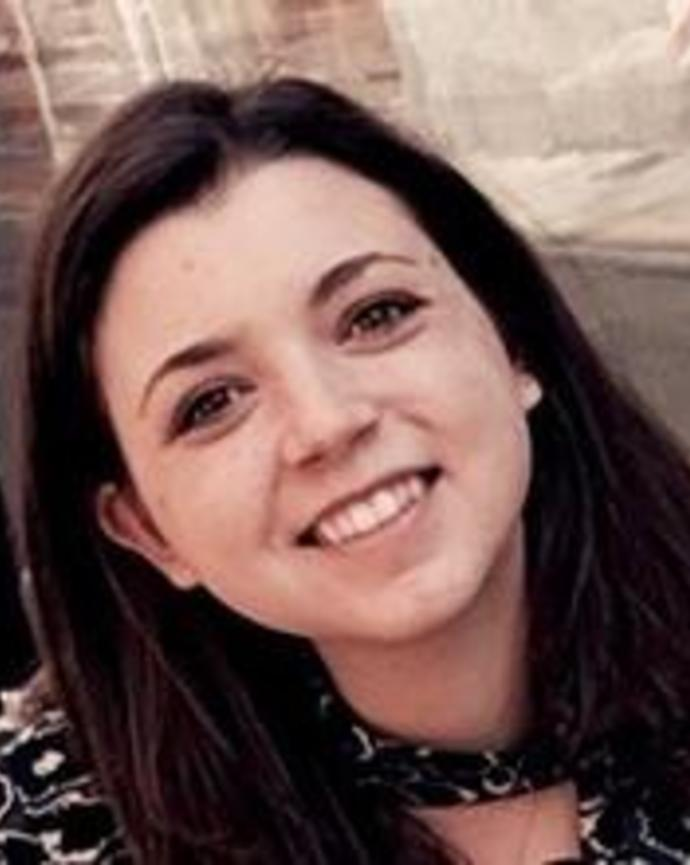
I seek to understand how variations in the human diet affects the composition and function of the gut microbiome. Using an evolutionary perspective, I aim to probe how these changes in led to unique metabolic functions of the human gut microbiome and how it is both conserved across populations and derived from our closest relatives. Currently, I work on projects that consider how cohabitation shifts microbial communities, investigate if extreme energy expenditure selects for microbes that metabolically benefit the host, and characterize the microbiome of distinct wild chimpanzee populations and environmental factors that may drive variation between populations.
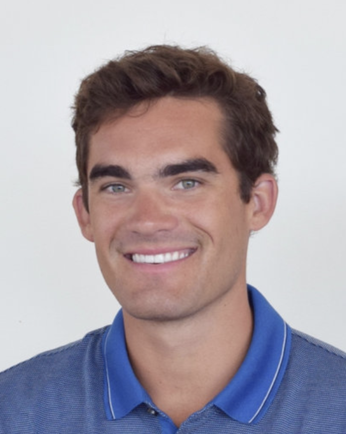
I am interested in the interplay between the gut microbial community and host energetics. The gut microbiome contributes to the human energy budget, but to date almost all studies of these effects have manipulated energy intake rather than energy expenditure. I seek to understand the fundamental nature of human-microbial interactions and their evolutionary significance by investigating the effects of energy expenditure on the gut microbiome. Currently, my research focuses on the potential ability for the gut microbiome to buffer the energetic cost of endurance running.
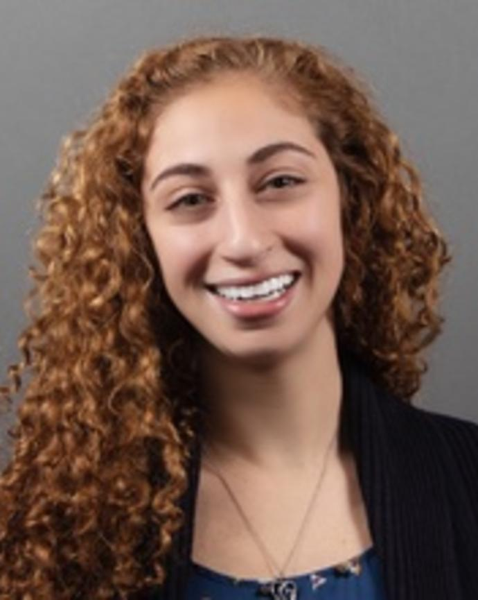
I am fascinated by ways in which variations in the human diet may have played an evolutionary role in shaping gut microbial diversity. I aim to understand how different nutritional strategies can influence the energy harvesting capacity of the gut microbiome, and how nontraditional sources of energy may lead to maladaptive consequences. In addressing these questions, my goal is to improve our knowledge of how nutrition and behavior impact long-term human metabolic health.
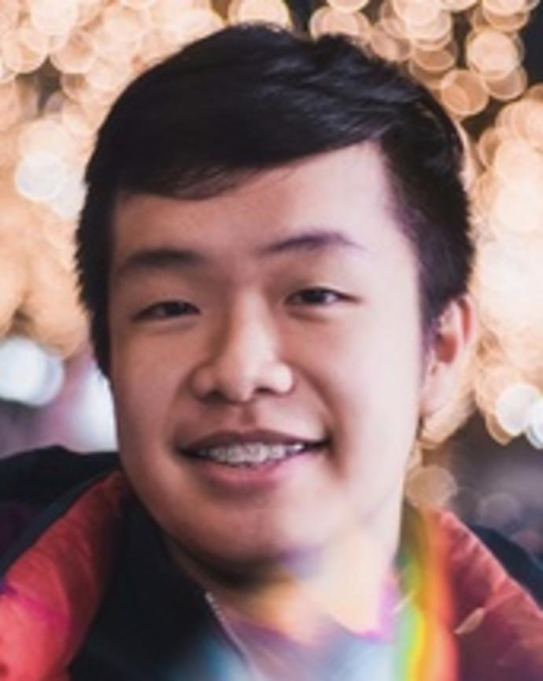
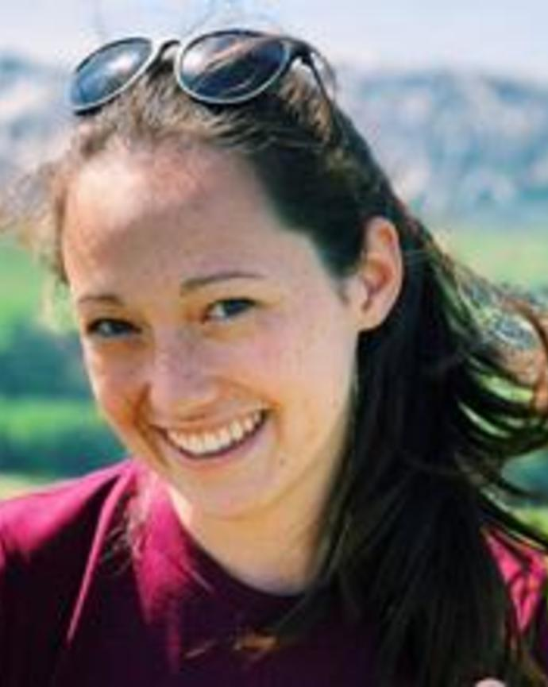
I am interested in investigating how diet shapes the microbiome through an evolutionary lens. For my senior thesis I am using DNA metabarcoding and biostatistical methods to catalogue chimpanzee diets (notoriously difficult in the field) using a reference DNA database. This diet information can then be combined with microbial data from each chimp to examine the relationship between diet and the gut microbiome in our closest relatives.
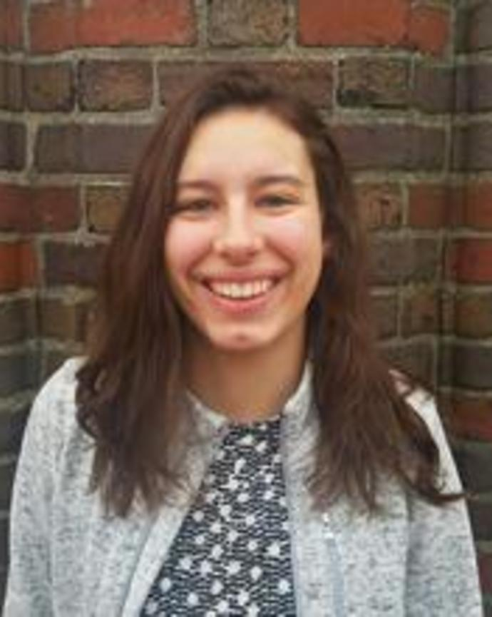
My interests broadly lie in exploring how animal morphology, physiology, and life history have been shaped through co-evolution the gut microbiota. Gut microbes have the potential to produce large-scale changes in host biology through the modulation of compounds within the body. In turn, these microbial functions could alter the ability of the host to adapt to novel environmental changes. My research in the Carmody lab currently focuses on the early-life human microbiome, exploring how energy gain in infants may be affected by the specificity between an infant’s gut microbes and certain sugars in their mother’s milk.
I am excited about the relationship between human nutrition, the microbiome, and metabolic health. I have learned that human physiology alone cannot explain our energy intake and its downstream effects — an entire community of microbes must be accounted for! I will be pursuing a senior thesis that investigates the ability of gnotobiotic mice to support human microbiomes versus the microbiomes of our closest living relatives, chimpanzees and gorillas. I hope to then utilize these ‘primatized’ mice to investigate whether the human microbiome has co-evolved unique functional capacities related to diet with human physiology and biology.
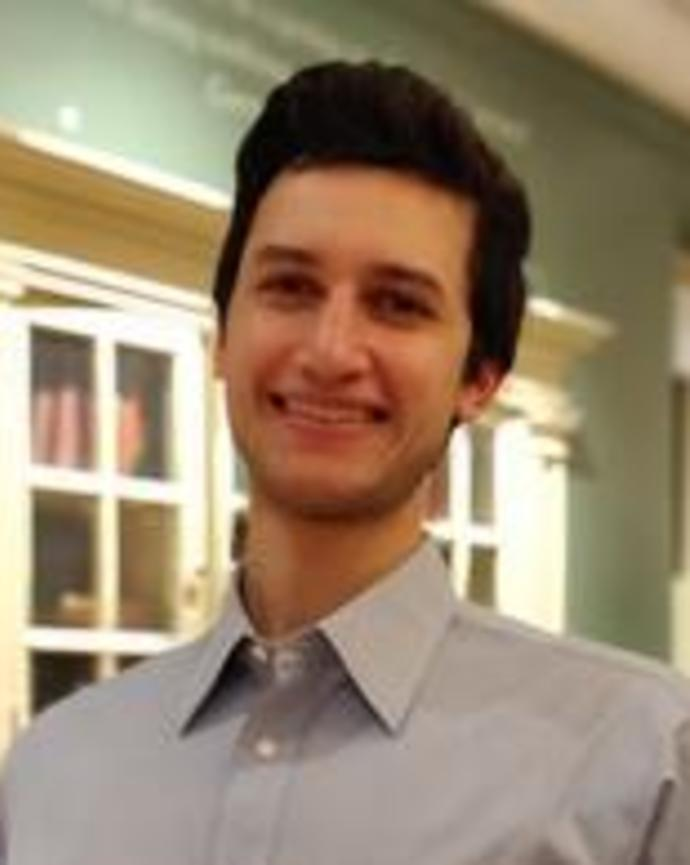
I am primarily interested in how diet can shape the human microbiome and in turn impact human health. Particularly, I am curious about the role of Akkermansia muciniphila and how certain dietary components, such as polyphenols, can foster its growth. I aim to gain a deeper understanding of the evolutionary role of polyphenols and their impact on the human gut microbiome.
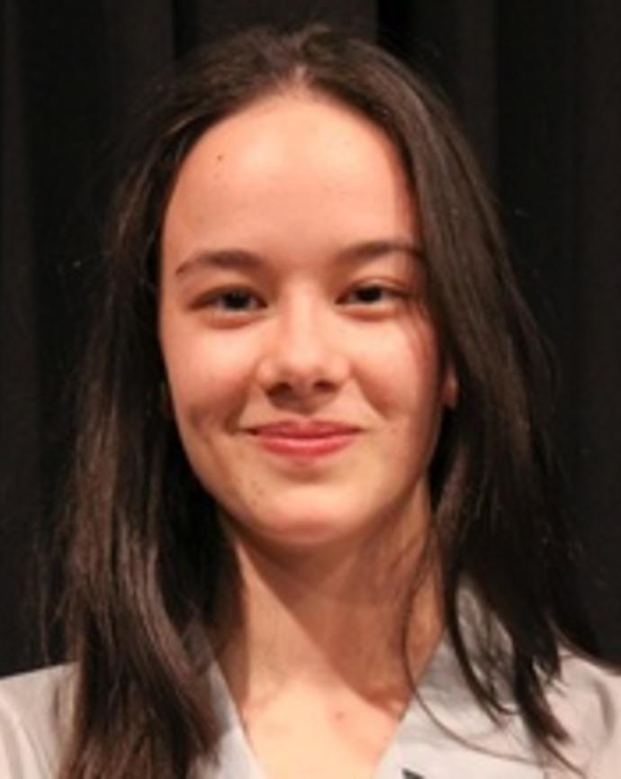
I am broadly interested in the effects of fermentative food processing, both by itself and in conjunction with cooking. More specifically, my senior thesis focuses on characterizing the effects of these food processing methods on host energy balance and the gut microbiome in a mouse study. Additionally, supplemental studies characterize differences in food durability and polyphenol content induced by food processing. Outside the Carmody Lab, I am also a pianist in the Harvard-NEC Dual Degree Program, and will be participating in the Van Cliburn International Piano Competition this summer.
I am broadly interested in how aspects of both modern and ancestral human diets can impact the gut microbial community and how shifts away from ancestral diets may have shaped the modern human gut microbiome and its energy harvesting capacity. I am currently exploring these topics by looking at how ancestral and modern sources of dietary polyphenols affect different microbes through in vitro and in vivo experiments.
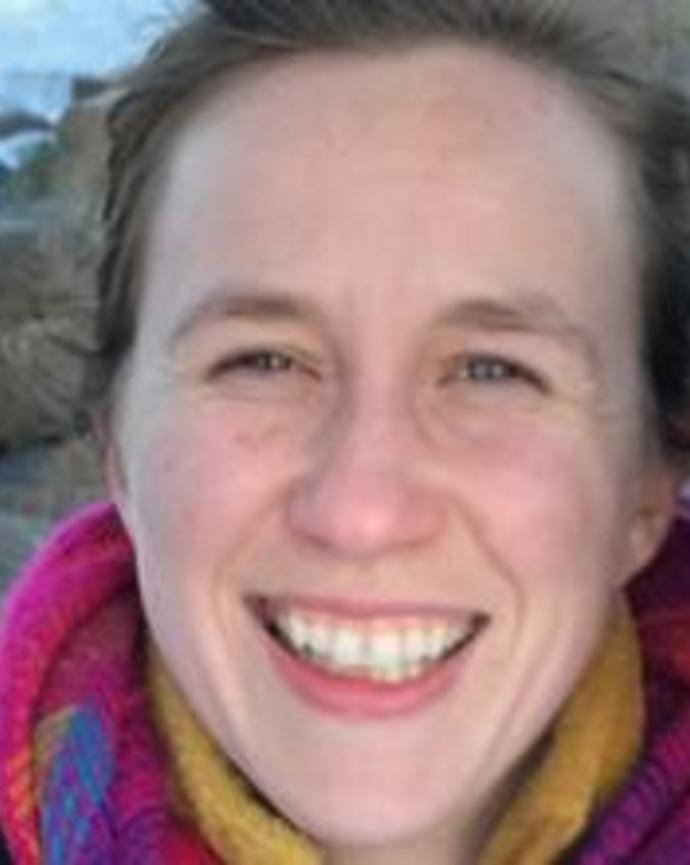
Microbiota responses to new conditions can have major fitness implications for the host. In my work, I combine ecology, evolution, microbiology, and physiology to track the dynamics of host and microbial responses under environmental change. Currently, I am studying how domestication has shaped the microbiota and how the microbiota help buffer marine organisms against environmental variation.
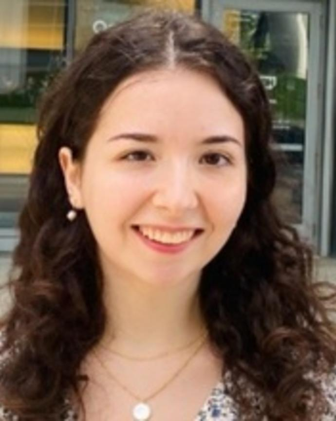